African vegetables amino acid & exploratory analysis
Bo Yuan
12/14/2019
# functional packages
library(readxl)
library(broom)
library(rebus)
library(ggrepel)
library(RColorBrewer)
library(ComplexHeatmap)
library(circlize)
library(plotly)
library(gridExtra)
library(cowplot)
# Machine learning packages
library(MASS)
library(glmnet)
library(caret)
library(rpart.plot) # for classification tree plot
library(randomForest)
library(e1071)
# The core package collection
# load last, so as the key functions are not masked by others; but instead masking others if any
library(tidyverse)# Set up ggplot global format
theme_set(theme_bw() +
theme(axis.text = element_text(color = "black"),
axis.title = element_text(colour = "black", face = "bold"),
strip.background = element_blank(),
strip.text = element_text(colour = "black",face = "bold")))Object naming: df.XXX: a data.frame or tibble object; e.g., df.all.data
df.modelname…: a data frame or tibble containing tidied results from a model prediction vs actual
mat.XXX: a matrix object; e.g., mat.content
plt.XXX: a plot object; e.g., plt.univariate.boxplot.dot
mdl.trained.XXXX: model from training set; e.g., mdl.trained.LDA
mdl.fitted.XXX: object with fitted results output from a trained model; e.g., mdl.fitted.LDA
mdl.XXX: a model object; e.g., mdl.LDA
fitted.XXX: predicted class, e.g. fitted.logistic.elasticNet
cf.XXX: confusion table; e.g., cf.counts.LDA.
func.XXX: defined functions; e.g., func.boxplot.Site()
Special note: function select is used in multiple packages. To avoid confusion, select function is at best specified as dplyr::select(…); or load tidyverse after loading all other packages
1 Calculation of amino acid content
# Read dataset and tidy up
path = "/Users/Boyuan/Desktop/My publication/7th. HILIC amino acid & PCA/Publish-ready files/AIV free amino acids content.xlsx"
# Data frame of injection concentration
df.inj.conc = read_excel(path , sheet = "injection conc. (ng.mL-1)") # read injection concentration dataset
amino.acids = (df.inj.conc %>% colnames())[-c(1:2)] # extract all amino acids analyzed
# Data frame of sample mass and traits
df.mass = read_excel(path, sheet = "sample info")
df.mass = df.mass %>% mutate(`Mass (mg)` = as.numeric(`Mass (mg)`))
# Combine the two data sets
df.AIV = df.inj.conc %>% left_join(df.mass, by = "Name")
# tidy up
df.AIV.tidy = df.AIV %>% #
gather(amino.acids, key = compounds, value = inj.conc) %>% # gather compounds
# content in mg / 100 g dry sample
# x 100 dil factor x 10 mL, convert to mg compound, then normalized by sample mass to 100 g DW
mutate(content = inj.conc * (100 * 10) /1000/1000 / `Mass (mg)` * 1000 * 100,
Category = factor(Category, levels = c("Nightshade", "Amaranth", "Spider plant", "Mustard"),
ordered = T))
df.AIV.tidy## # A tibble: 11,424 x 26
## Name `Data File` Category Species Cultivar `storage packs` `sample name` `Plot No.` Harvest Season Site Rep
## <chr> <chr> <ord> <chr> <chr> <chr> <chr> <chr> <chr> <chr> <chr> <chr>
## 1 A_1 A_1.d Amaranth Amaran… UG-AM-40 A_A - 1 1 3 Turbo 1
## 2 A_2 A_2.d Amaranth A. cru… AC-45 A_A - 2 1 3 Turbo 1
## 3 A_3 A_3.d Amaranth - Commerc… A_A - 3 1 3 Turbo 1
## 4 A_4 A_4.d Amaranth A. hyp… AH-TL A_A - 4 1 3 Turbo 1
## 5 A_5 A_5.d Amaranth - Local M… A_A - 5 1 3 Turbo 1
## 6 A_6 A_6.d Amaranth Amaran… Ex-Zan A_A - 6 1 3 Turbo 1
## 7 A_7 A_7.d Amaranth A. tri… RUAM24 A_A - 7 1 3 Turbo 1
## 8 A_8 A_8.d Amaranth A. cru… MADIIRA… A_A - 8 1 3 Turbo 1
## 9 A_9 A_9.d Amaranth A. cru… MADIIRA… A_A - 9 1 3 Turbo 1
## 10 A_10 A_10.d Amaranth A. cru… AC-NL A_A - 10 1 3 Turbo 1
## # … with 11,414 more rows, and 14 more variables: `Mass (mg)` <dbl>, Year <dbl>, `Data weighed` <chr>, `Note1_Moldy
## # status` <chr>, `Note2_harvest specific date` <chr>, Note3_sites <chr>, `Note4_missing row` <chr>, `Note5_Single
## # Reps` <chr>, Note6_fluffy <chr>, `Note7_label missing` <chr>, Note8_Color <chr>, compounds <chr>, inj.conc <dbl>,
## # content <dbl># Compounds name
unique.compounds = df.AIV.tidy$compounds %>% unique()# check cultivar number
checkSpeciesCultivar = function(category){
x = (df.AIV %>% filter(Category == category))$Cultivar %>% unique()
y = (df.AIV %>% filter(Category == category))$Species %>% unique()
return(list(x, y))
}
checkSpeciesCultivar("Nightshade")## [[1]]
## [1] "SS-49" "SS-52" "Commercial" "Local Market" "BG-16"
## [6] "EX-HA1" "BG-29" "SS-04-2" "BG-19" "Olevolosi"
## [11] "Nduruma" "Simlaw Seeds (kenya)" "-"
##
## [[2]]
## [1] "-" "S. scabrum" "S. villosum"checkSpeciesCultivar("Spider plant")## [[1]]
## [1] "ML-SF-17" "UG-SF-15" "ML-SF-29" "PS" "UG-SF-23"
## [6] "Local Market" "-" "Commercial" "Simlaw Seeds (kenya)" "UGSF15"
##
## [[2]]
## [1] "-"checkSpeciesCultivar("Amaranth")## [[1]]
## [1] "UG-AM-40" "AC-45" "Commercial" "AH-TL" "Local Market"
## [6] "Ex-Zan" "RUAM24" "MADIIRA 2" "MADIIRA 1" "AC-NL"
## [11] "Simlaw Seeds (kenya)" "MADIIRA 2, AM38" "MADIIRA 1, EX-ZIM" "-"
##
## [[2]]
## [1] "Amaranthus sp." "A. cruentus" "-" "A. hypochondriacus" "A. tricolor"
## [6] "A. dubius"checkSpeciesCultivar("Mustard")## [[1]]
## [1] "Rungwe" "Chinasaki" "Arumeru" "Mbeya Green" "Mustard 1" "RW-B-1" "Local Market"
## [8] "Mbeya Purple" "Rw-B-1" "-"
##
## [[2]]
## [1] "-" "B. carinata"2 Global color setup
## Specify Colors ----
# Manual assignment for category (most important one)
unique.categories = df.AIV.tidy$Category %>% unique()
color.category = c("Black", "Steelblue", "Firebrick" , "Darkgreen")
names(color.category) = unique.categories
# Manual assignment for cultivars (too many levels...)
unique.cultivar = df.AIV.tidy$Cultivar %>% unique()
color.cultivar = colorRampPalette(brewer.pal(12, "Paired"))(length(unique.cultivar)) %>%
sample()
# pie(x = rep(1, length(color.cultivar)), col = color.cultivar)
names(color.cultivar) = unique.cultivar
# Define function for automatic color assignment
func.color.assignment =
function(mypalette, variable){ # variable being one of the df.AIV.tidy
unique = df.AIV.tidy[[variable]] %>% unique() # unique levels
color.unique = brewer.pal(n = length(unique), mypalette) # extract colors
names(color.unique) = unique # assign unique levels as color name
return(color.unique)
}
# assign colors using defined function
# display.brewer.all()
color.species = func.color.assignment(mypalette = "Set3", variable = "Species")
color.year = func.color.assignment(mypalette = "Set2", variable = "Year")
color.site = func.color.assignment(mypalette = "Set1", variable = "Site")
color.harvest = func.color.assignment(mypalette = "Dark2", variable = "Harvest")
color.season = func.color.assignment(mypalette = "Accent", variable = "Season")3 Univariate analysis
3.1 Scatter-boxplot
plt.univariate.boxplot.dot = df.AIV.tidy %>%
ggplot(aes(x = Category, y = content, color = Category)) +
geom_boxplot(outlier.alpha = 0) +
geom_point(size = .1, alpha = .5, position = position_jitter(.25, 0)) +
# geom_rug(alpha = .1) +
facet_wrap(~compounds, scales = "free", nrow = 4) +
theme(axis.text.x = element_blank(),
axis.title.x = element_blank(),
legend.position = c(.8, .1)) +
labs(y = "Content (mg/100g DW)") +
scale_color_manual(values = color.category)
plt.univariate.boxplot.dot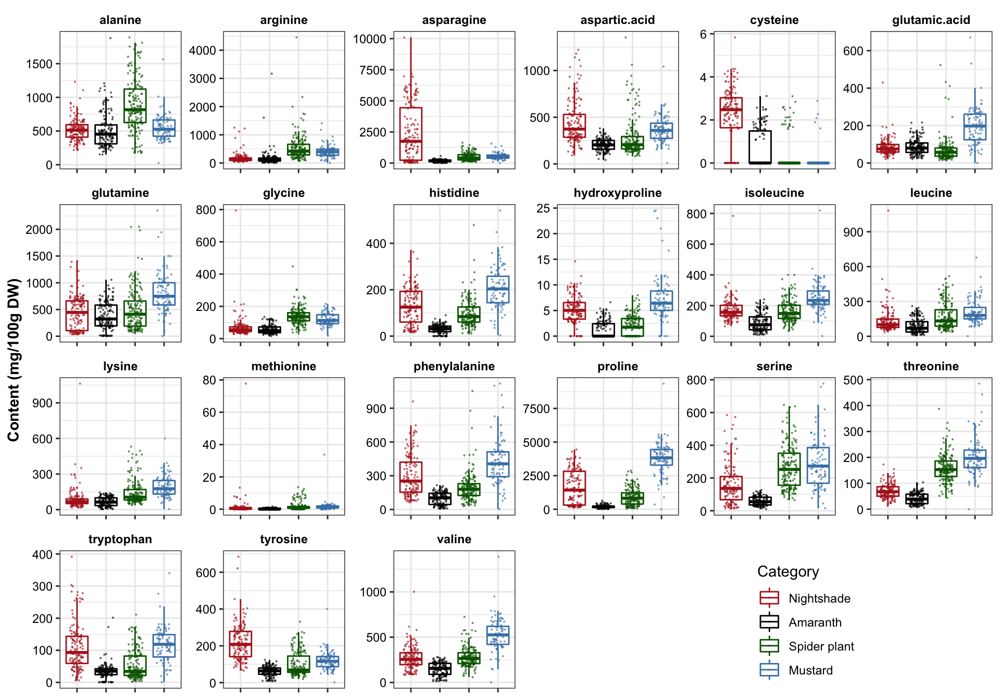
3.2 Distribution analysis
plt.univariate.density = df.AIV.tidy %>%
ggplot(aes(x = content, color = Category, fill = Category)) +
geom_density(alpha = .1) +
facet_wrap(~compounds, scales = "free", nrow = 4) +
theme(legend.position = c(.8, .1)) +
scale_color_manual(values = color.category) +
scale_fill_manual(values = color.category) +
labs(x = "Content (mg/100g DW)", y = "Distribution density")
plt.univariate.density
# Rougly follows a normal / bell shaped distribution regardless of the sample diversity. Amaranth apears to have more consistent profile, while mustard and nightshade more spread apart.## Draw distribution based on cultivation site for each category
# Define plotting function
func.boxplot.Site = function(CategoryInput){
df.AIV.tidy %>%
filter(Category == CategoryInput) %>%
ggplot(aes(x = Site, y = content, color = Site)) +
geom_boxplot(outlier.alpha = 0) +
geom_point(position = position_jitter(.3, 0), size = .1) +
facet_wrap(~compounds, scales = "free", nrow = 4) +
scale_color_manual(values = color.site) +
theme(legend.position = c(.8, .1), title = element_text(face = "bold")) +
labs(y = "Content (mg/100g DW)", title = CategoryInput)
}func.boxplot.Site(CategoryInput = "Nightshade")func.boxplot.Site(CategoryInput = "Amaranth")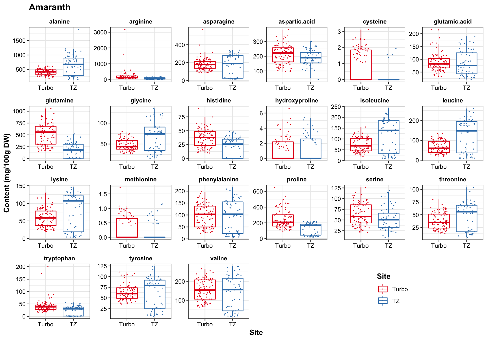
func.boxplot.Site(CategoryInput = "Spider plant")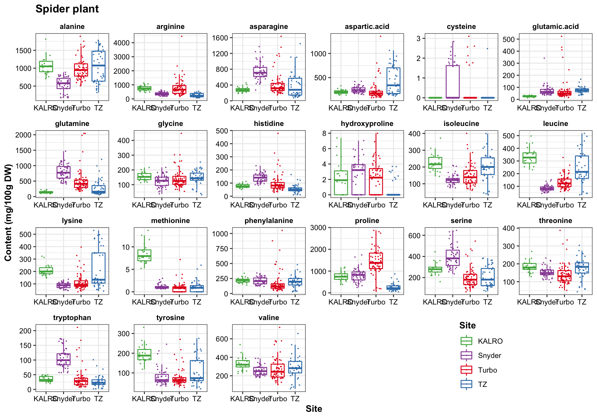
func.boxplot.Site(CategoryInput = "Mustard")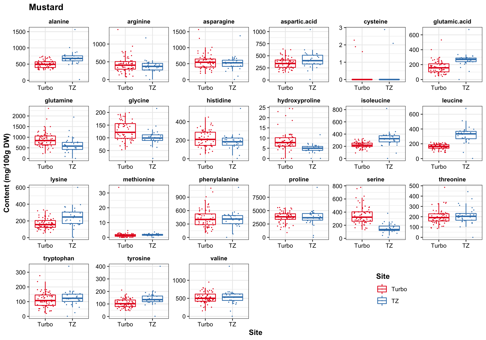
3.3 Check outliers
# Check some of the unusually high content of amino acids
contentThreshold = 5000 # check cases where amino acid content > 5000 mg/ 100 g DW
p = df.AIV.tidy[(df.AIV.tidy$content > contentThreshold), ]
nrow(p) # a total of 37 cases where certain amino acids are higher than 5000 mg / 100 g DW in a sample## [1] 37# Check where the unusual results occur -- compute percentage
df.bizarreContent.percent = p %>% select(Site, Category, Year, compounds) %>%
table() %>% prop.table() %>% round(2) %>%
# calculate subtotal from each site
as.data.frame() %>% spread(Category, Freq) %>%
mutate(subtotal = Nightshade + Amaranth + `Spider plant` + Mustard) %>%
filter(subtotal != 0) %>%
arrange(subtotal)
df.bizarreContent.percent## Site Year compounds Nightshade Amaranth Spider plant Mustard subtotal
## 1 TZ 2017 proline 0.00 0 0 0.03 0.03
## 2 Turbo 2013 asparagine 0.08 0 0 0.00 0.08
## 3 Turbo 2017 proline 0.00 0 0 0.16 0.16
## 4 Turbo 2017 asparagine 0.73 0 0 0.00 0.73# calcualte total counts for each condition
df.bizarreContent.counts = p %>% select(Site, Category, Year, compounds) %>%
table() %>% # contingency table
as.data.frame() %>% # compile as data frame
filter(Freq != 0)
df.bizarreContent.counts## Site Category Year compounds Freq
## 1 Turbo Nightshade 2013 asparagine 3
## 2 Turbo Nightshade 2017 asparagine 27
## 3 Turbo Mustard 2017 proline 6
## 4 TZ Mustard 2017 proline 1p$compounds %>% table()## .
## asparagine proline
## 30 7# Compute how likely is the upper result happening by pure chance?
nrow(df.AIV.tidy %>% filter(Site == "Turbo" & Year == 2017 & compounds %in% c("asparagine", "proline"))
) / nrow(df.AIV.tidy) ## [1] 0.03028711A combination of (Site = “Turbo”) and (Year = 2017) and (compounds = asparagine or proline) account for only 3% of the total cases. Thus, cases above 5 g/ 100 g DW found in Turbo 2017 is highly unlikely to be happening due to pure chance.
4 Correlation analysis
# Check compound overal correlation scatterplot ----
df.all.data = df.AIV.tidy %>%
dplyr::select(Name, Category, Species, Cultivar, Rep,# plant varieties
Year, Harvest, Season, Site, # environment
compounds, content) %>%
spread(key = compounds, value = content) # each amino acid, each column
category = df.all.data$Category %>% as.factor() # category as a factor vector
col.pairs = brewer.pal(n_distinct(category), "Set1") # colors for category
mat.content = df.all.data[, amino.acids] %>% as.matrix() # pure content matrix
rownames(mat.content) = df.all.data$Category# Compute correlation matrix (i.e., the covariance matrix of standardized input matrix) for each category
# pairs(mat.content, cex = .1, pch = 16, col = col.pairs[category], lower.panel = NULL)
colors = colorRampPalette(brewer.pal(11, "PiYG"))(20)
# pie(rep(1, length(colors)), col = colors)
# Define heatmap correlation matrix format
correlationHeatmap = function(mat, category.select){
# selected category correlation matrix
mat.selected = mat[rownames(mat.content) == category.select, ] %>% cor()
# max and min of correlation values
max.cor = mat.selected %>% max()
min.cor = mat.selected %>% min;
`breaks>0`= seq(0, max.cor, length.out = 11)
`breaks<0`= seq(min.cor, 0, length.out = 10)
breaks = c(`breaks<0`, `breaks>0`)[-10]
# assign breaking points to color serires
color.func = colorRamp2(breaks = breaks, colors = rev(colors))
# Main plot (including column annotation)
mainplot = Heatmap(
mat.selected, col = color.func,
heatmap_legend_param = list(color_bar = "continuous",
legend_height = unit(8, "cm")),
column_title = paste(category.select, "amino acid correlation matrix")
)
return(mainplot)
}# plot correlation heatmap for each category
correlationHeatmap(mat = mat.content, category.select = "Amaranth")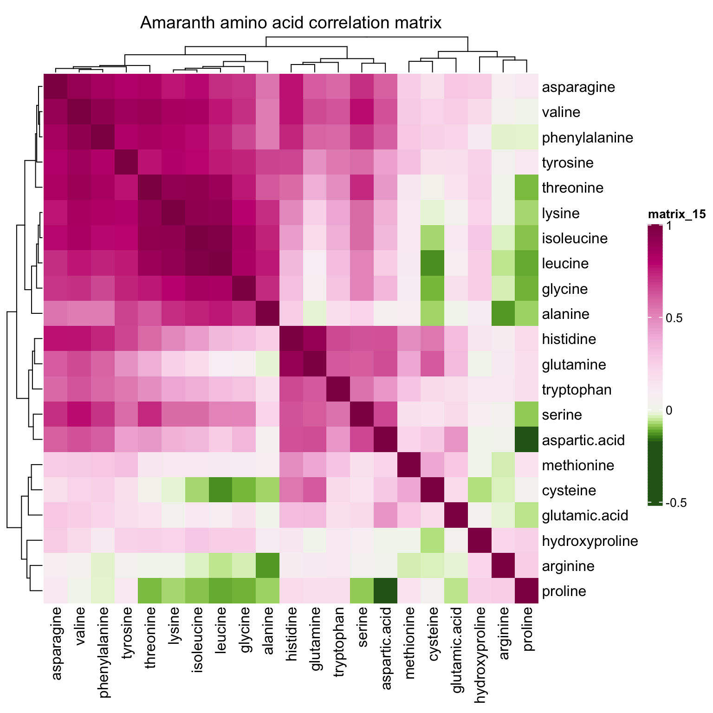
correlationHeatmap(mat = mat.content, category.select = "Spider plant")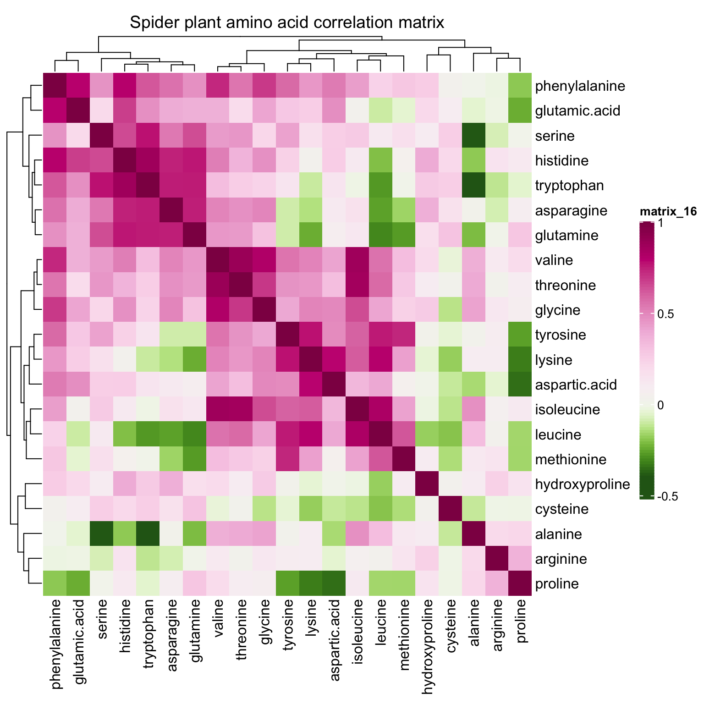
correlationHeatmap(mat = mat.content, category.select = "Nightshade")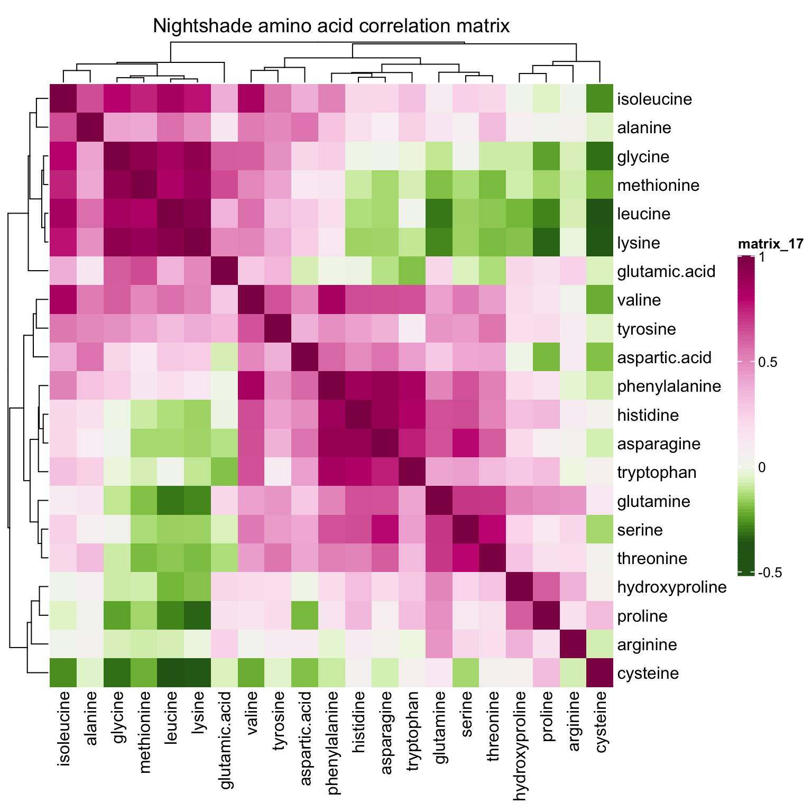
correlationHeatmap(mat = mat.content, category.select = "Mustard")5 Content heatmap
mat.content.heat = t((mat.content + 1) %>% log10())
# column annotation
anno.col = HeatmapAnnotation(
# specify column annotation items
# plant varieties
category = df.all.data$Category, species = df.all.data$Species, cultivar = df.all.data$Cultivar,
# cultivation environment
year = df.all.data$Year, season = df.all.data$Season,
harvest = df.all.data$Harvest, site = df.all.data$Site,
# not show cultivar legend
show_legend = c(T, T, F, T, T, T, T),
# # color assignment
col = list(
category = color.category, species = color.species, cultivar = color.cultivar,
year = color.year, season = color.season, harvest = color.harvest, site = color.site
),
# distance between each row of column annotation
gap = unit(1, "mm"),
# legend row control; by default, # rows = # levels
annotation_legend_param = list(
species = list(nrow = floor(length(color.species) / 2) + 1 )
)
)# main body color gradient
# set up color breaks
content.log.max = mat.content.heat %>% max()
content.log.min = mat.content.heat %>% min()
content.log.mean = sum(content.log.max, content.log.min)/2
`content.log.breaks.up`= seq(content.log.mean, content.log.max, length.out = 11)
`content.log.breaks.low`= seq(content.log.min, content.log.mean, length.out = 10)
content.log.breaks = c(`content.log.breaks.low`, `content.log.breaks.up`)[-10]
# assign breaking points to color serires
mycolor = c(colorRampPalette(brewer.pal(11, "Spectral"))(length(content.log.breaks)))
content.log.color.func = colorRamp2(breaks = content.log.breaks, colors = rev(mycolor))
# draw heatmap main plot
mainplot = Heatmap(
mat.content.heat, col = content.log.color.func,
top_annotation = anno.col, # column annotation
cluster_rows = T, cluster_columns = F, show_column_names = F,
column_dend_height = unit(5, "cm"),
heatmap_legend_param = list(
title = "log10 [mg/100 g DW]", title_position = "leftcenter-rot",
color_bar = "continuous", legend_height = unit(8, "cm"),
direction = "vertical",
labels_gp = gpar(fontsize = 12))
)draw(mainplot,
heatmap_legend_side = "right", annotation_legend_side = "bottom")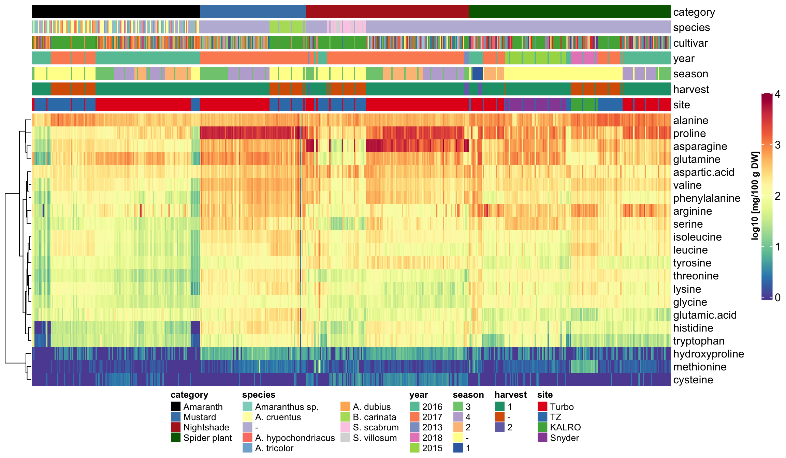
6 Principle component analysis (PCA) upon categories
mat.content.scaled = mat.content %>% scale(center = T, scale = T)
# Check eigenvalues
content.scaled.covarianceMatrix = mat.content.scaled %>% var()
eigen.values = (content.scaled.covarianceMatrix %>% eigen())$values
# plot contribution percent
data.frame(PC.no = seq(eigen.values), values = eigen.values) %>%
mutate(conc.pct = values / eigen.values %>% sum() * 100) %>%
ggplot(aes(x = PC.no, y = conc.pct)) + geom_bar(stat = "identity") +
geom_line(linetype = "dashed", color = "firebrick") + theme_bw()# contribution percentage of the major PC's
PC1.percent = (eigen.values[1] / eigen.values %>% sum() * 100) %>% round()
PC2.percent = (eigen.values[2] / eigen.values %>% sum() * 100) %>% round()
PC3.percent = (eigen.values[3] / eigen.values %>% sum() * 100) %>% round()
# Check eigenvectors
eigen.vectors = (mat.content.scaled %>% var() %>% eigen())$vectors
eigen.vectors = -eigen.vectors
rownames(eigen.vectors) = colnames(mat.content.scaled)
# Recall that eigenvector elements are the coefficients of corresponding original variables
mat.PC = mat.content.scaled %*% (eigen.vectors)
df.PC = df.all.data %>%
dplyr::select(Name, Category, Species, Cultivar, Year, Season, Harvest, Site) %>%
cbind(mat.PC[, 1:3]) %>% as_tibble() %>%
rename(PC1 = `1`, PC2 = `2`, PC3 = `3`)
df.PC %>% head(); df.PC %>% tail()## # A tibble: 6 x 11
## Name Category Species Cultivar Year Season Harvest Site PC1 PC2 PC3
## <chr> <ord> <chr> <chr> <dbl> <chr> <chr> <chr> <dbl> <dbl> <dbl>
## 1 A_1 Amaranth Amaranthus sp. UG-AM-40 2016 3 1 Turbo -1.28 0.292 0.107
## 2 A_10 Amaranth A. cruentus AC-NL 2016 3 1 Turbo -2.11 0.0132 0.489
## 3 A_100 Amaranth Amaranthus sp. Ex-Zan 2016 - 1 TZ -4.67 0.0465 0.0512
## 4 A_101 Amaranth - AH-TL 2016 - 1 TZ -4.47 0.0979 -0.144
## 5 A_102 Amaranth Amaranthus sp. UG-AM-40 2016 - 1 TZ -4.65 0.00214 -0.0108
## 6 A_103 Amaranth A. cruentus AC-NL 2016 - 1 TZ -4.50 -0.0168 -0.00270## # A tibble: 6 x 11
## Name Category Species Cultivar Year Season Harvest Site PC1 PC2 PC3
## <chr> <ord> <chr> <chr> <dbl> <chr> <chr> <chr> <dbl> <dbl> <dbl>
## 1 S_94 Spider plant - Local Market 2016 3 1 Turbo 4.35 -2.36 1.75
## 2 S_95 Spider plant - ML-SF-17 2016 3 1 Turbo 1.62 -1.23 1.32
## 3 S_96 Spider plant - ML-SF-29 2016 3 1 Turbo -0.688 -1.55 0.830
## 4 S_97 Spider plant - UG-SF-23 2016 3 1 Turbo -1.82 -1.30 0.599
## 5 S_98 Spider plant - PS 2016 3 1 Turbo 0.298 -1.73 0.869
## 6 S_99 Spider plant - Commercial 2016 3 1 Turbo -0.172 -1.46 0.8926.1 2D PCA plot
6.1.1 PC1 vs PC2
plt.PCA.1.2 =
df.PC %>% ggplot(aes(x = PC1, y = PC2, color = Category)) + geom_point() +
scale_x_continuous(limits = c(-6, 7),
paste("Standardized PC1, ", PC1.percent, "% contribution"),
breaks = seq(-5, 7, by = 2.5)) +
scale_y_continuous(limits = c(-5, 5),
paste("Standardized PC2, ", PC2.percent, "% contribution")) +
stat_ellipse(level = .7, linetype = "dashed") + # containing 70% of data included
scale_color_manual(values = color.category) +
theme(legend.position = c(.15, .15)) # + coord_fixed(1)
plt.PCA.1.2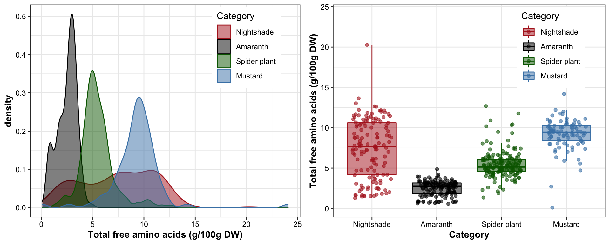
6.1.2 PC1 vs. PC3
plt.PCA.1.3 = df.PC %>% ggplot(aes(x = PC1, y = PC3, color = Category)) + geom_point() +
scale_x_continuous(limits = c(-6, 7),
paste("Standardized PC1, ", PC1.percent, "% contribution"),
breaks = seq(-5, 7, by = 2.5)) +
scale_y_continuous(limits = c(-4, 3),
paste("Standardized PC3, ", PC3.percent, "% contribution")) +
stat_ellipse(level = .7, linetype = "dashed") + # containing 70% of data included
scale_color_manual(values = color.category) +
theme(legend.position = c(.15, .15)) # + coord_fixed(1)
plt.PCA.1.36.1.3 PC 2 vs. PC3
plt.PCA.2.3 = df.PC %>% ggplot(aes(x = PC2, y = PC3, color = Category)) + geom_point() +
scale_x_continuous(limits = c(-5, 5),
paste("Standardized PC2, ", PC2.percent, "% contribution"),
breaks = seq(-5, 7, by = 2.5)) +
scale_y_continuous(limits = c(-4, 3),
paste("Standardized PC3, ", PC3.percent, "% contribution")) +
stat_ellipse(level = .7, linetype = "dashed") + # containing 70% of data included
scale_color_manual(values = color.category) +
theme(legend.position = c(.15, .15)) # + coord_fixed(1)
plt.PCA.2.3 
grid.arrange(plt.PCA.1.2, plt.PCA.1.3, plt.PCA.2.3, nrow = 1)6.2 3D PCA plot
plot_ly(df.PC, x = ~PC1, y = ~PC2, z = ~PC3, color = ~Category,
colors = color.category) %>%
add_markers() %>%
layout(title = '3D Interactive PCA',
scene = list(
xaxis = list(title = paste("Standardized PC1, ", PC1.percent, "% contribution"),
range = c(-6, 5)),
yaxis = list(title = paste("Standardized PC2, ", PC2.percent, "% contribution"),
range = c(-5, 5)),
zaxis = list(title = paste("Standardized PC3, ", PC3.percent, "% contribution"),
range = c(-4, 4))
)
)Based on 70% ellipse, the four categories are mostly separated; recall here that only 38 + 14 = 42% of total data considered. When higher dimension included, the four categories are likely to be separated in a more complete sense. Here we’re assuming a joint normal distribution by drawing the ellipse containing 70% data, but it’s inaccurate. Though mustard appears pretty normally distributed,other groups not the case. Such as in nightshade and amaranth, its own clusters exist.
6.3 PCA interpretation
6.3.1 Coefficients of linear combination
# Check principal component interpretation: the
# with ComplexHeatmap
eigen.vectors[, 1:2] %>%
Heatmap(cluster_columns = F, cluster_rows = F,
heatmap_legend_param = list(color_bar = "continuous", legend_height = unit(8, "cm")))
# with ggplot2 for later more convenient plot combination
df.eigen.vectors = eigen.vectors[, 1:2] %>% as_tibble() %>%
mutate(compounds = eigen.vectors %>% rownames()) %>%
rename(PC1 = V1, PC2 = V2)
plt.eig.vector = df.eigen.vectors %>%
gather(-compounds, key = PC, value = `eigenvector elements (coefficient)`) %>%
ggplot(aes(x = compounds, y = PC)) +
geom_tile(aes(fill = `eigenvector elements (coefficient)`)) +
scale_fill_gradient2(midpoint = 0, high = "firebrick", low = "skyblue", name = "") +
coord_flip() + theme(legend.position = "top")
# plt.eig.vector6.3.2 Loadings
mat.PC.var.correlation = diag(content.scaled.covarianceMatrix) %>%
diag() %*% # for standardized input matrix, this diagnol matrix is essentail identical matrix
eigen.vectors %*%
diag(eigen.values %>% sqrt())
# convert to tibble format. This is the correlation matrix of amino acids with PC's!
df.PC.var.correlation = mat.PC.var.correlation[, 1:2] %>%
as_tibble() %>%
mutate(compounds = colnames(mat.content.scaled)) %>%
rename(CorrelationWithPC1 = V1, CorrelationWithPC2 = V2)
df.PC.var.correlation## # A tibble: 21 x 3
## CorrelationWithPC1 CorrelationWithPC2 compounds
## <dbl> <dbl> <chr>
## 1 0.585 -0.642 leucine
## 2 0.840 -0.314 isoleucine
## 3 0.719 0.535 tryptophan
## 4 0.908 0.277 phenylalanine
## 5 0.961 -0.0655 valine
## 6 0.361 -0.497 methionine
## 7 0.563 0.178 tyrosine
## 8 0.595 0.234 proline
## 9 0.269 -0.562 alanine
## 10 -0.0490 0.576 cysteine
## # … with 11 more rowsplt.loadings =
df.PC.var.correlation %>%
ggplot(aes(x = CorrelationWithPC1, y = CorrelationWithPC2, color = compounds)) +
geom_point() + geom_text_repel(aes(label = compounds)) +
geom_segment(aes(x = 0, xend = 1, y = 0, yend = 0),
color = "black", size = .1) +
geom_segment(aes(x = 0, xend = 0, y = -.6, yend = 1),
color = "black", size = .1) +
geom_segment(aes(x = 0, y = 0, xend = CorrelationWithPC1, yend = CorrelationWithPC2),
size = .2) +
theme(legend.position = "") +
scale_color_manual(values = colorRampPalette( brewer.pal(8, "Dark2"))(21) %>% sample())
# plt.loadings6.3.3 Coefficients + loadings
plot_grid(plt.loadings, plt.eig.vector,
nrow = 1, align = "h", rel_widths = c(2, 1, .7), labels = "AUTO")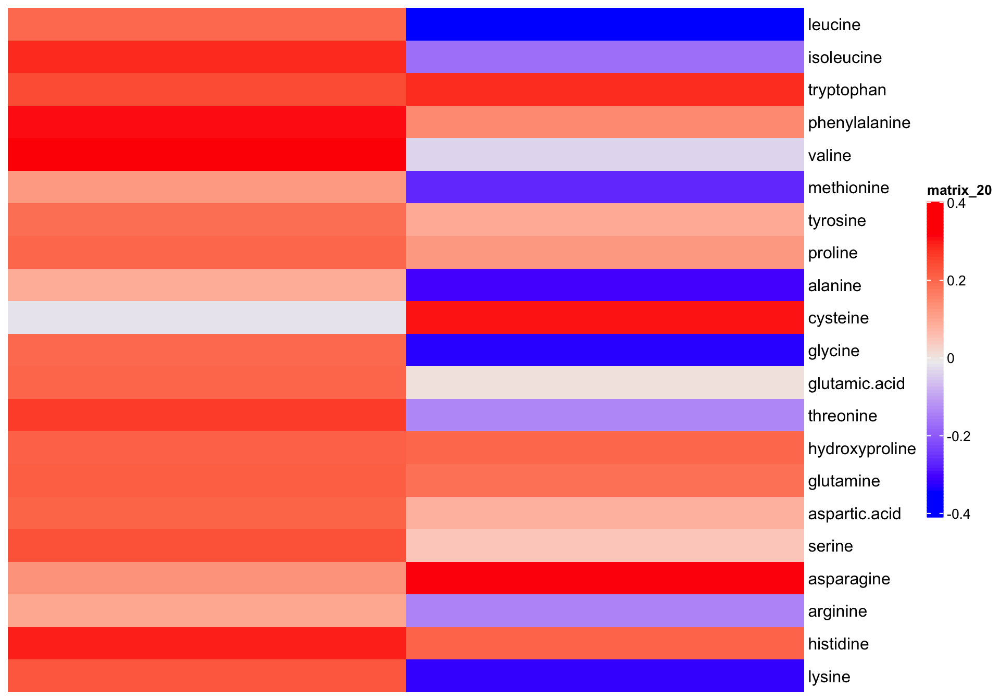
# checking PC1 element (coefficients) vs. (variable correlation with PC1)
df.PC.var.correlation %>% left_join(df.eigen.vectors, by = "compounds") %>%
ggplot(aes(x = CorrelationWithPC1, PC1)) +
geom_text_repel(aes(label = compounds))When the input data matrix is standardized, the correlation between PC’s and the original variable is exactly linear to the corresponding eigenvector elements (the coefficients). Recall the correlation = coefficient * sqrt(eigenvalue lambda) / standard deviation of the variable. When standardized, the correlation is a fixed multiple (by times of sqrt(eigenvalue)) of the coefficient.
The original content values are standardized into z-scores prior to PCA to allow all amino acids to play equal role in classificaiton without biased by their varied content. The First PC is a weighted sum of the amino acid standardized content. Such weight appears to be loosely correlated with the statistic F value of univariate ANOVA of amino acids content, i.e., if an amino acid presents higher difference between the four categories, then this amino acids tends to contributes more to the computation of the first principle component, though such association remains moderate week (R2 = 0.3, p = 0.02). In a prior similar study, PC1 was found strongly correlated with the phytochemical content level when data is not normalized (see labmate Bernie’s spider plant phytochemistry paper supplementary material).
Amaranth and mustard are nicely differentiated along the PC1 direction, and such horizontal separation could be largely attributed to amino acids with larger correlations with PC1, such as valines, phenylalaine and histidine, which are more abundant in mustard than in amaranth.
While for nightshade and spiderplant, the differentiation mostly occurs vertically along the PC2 direction, associated largely with amino acids that present extreme correlations with PC2, such as asparagine, cystein and tryptophan (loadings > 0.5) which are more abundant in nightshade, and leucine, glycine, lysine and alanine (loadings < -0.5) which are more enriched in spiderplant. The loading pattern shows amino acids’ various contribution to how the four categories are separated in the PC1 and PC2 directions, and reflects the content comparison as shown in the prior univariate plots.
While the loadings are important tool to shown the separation mechanism, check of the corresponding eigenvector elements could also be beneficial, since such elements directly constitute the coefficient of PC construction, and shows the contribution of each amino acid to PC computation in context of all other amino acids, a somewhat more holistic picture than loading analysis. In our case, however, the coefficients are merely a fixed multiple (by the square root of corresponindg ei) of the loadings because of the content data standardization pior to PCA. Yet still for purpose of completeness and a somewhat more straightforwrd interpretation of PC composition, we present the coefficients in this markdown report.
For all four categories, majority of samples are differentiated, as shown by the ellipse containing 70 % of data for each category. Despite some noticable overlap, it is of importance to note that the first two PC’s constitute only ~52% of total data variability. When visualized at three dimensions, as shown in the interactive plot, a much improved separation is observed. In fact, when PC’s at higher dimension are considered, a more clear-cut separation is likely to happen. This clearly demonstrates a strong genetic influence upon the amino acid profile, which could be utilized for classification purpose.
6.3.4 Coefficient interpretation
# Explore the 1st PC coefficent weight / correlation with marginal data variability (by ANOVA) ------
df.ANOVA = data.frame(); df.ANOVA## data frame with 0 columns and 0 rowsfor (a in unique.compounds) {
#perform one-way anova for each compounds (in this case equivalent to marginal MNOVA)
ANOVA.model = aov(content~Category, data = df.AIV.tidy %>% filter(compounds == a) )
# extract F value for each compund
Fvalue = (ANOVA.model %>% tidy() %>% filter(term == "Category")) %>%
dplyr::select(statistic) %>% rename (Fvalue = statistic)
df.ANOVA.update = cbind(data.frame(compounds = a), Fvalue = Fvalue )
df.ANOVA = rbind(df.ANOVA, df.ANOVA.update)
}
df.ANOVA## compounds Fvalue
## 1 leucine 30.524217
## 2 isoleucine 91.096075
## 3 tryptophan 79.395893
## 4 phenylalanine 106.058105
## 5 valine 183.221292
## 6 methionine 5.292197
## 7 tyrosine 149.665961
## 8 proline 319.709166
## 9 alanine 68.256371
## 10 cysteine 140.927173
## 11 glycine 89.796563
## 12 glutamic acid 84.412520
## 13 threonine 324.567971
## 14 hydroxyproline 129.314983
## 15 glutamine 33.619717
## 16 aspartic acid 45.273086
## 17 serine 112.780202
## 18 asparagine 104.488240
## 19 arginine 48.215793
## 20 histidine 145.313773
## 21 lysine 46.002235# combine PC and ANOVA stats
df.ANOVA.PC = df.ANOVA %>% left_join(df.PC.var.correlation, by = "compounds") %>%
left_join(df.eigen.vectors, by = "compounds")
# plot association of PC with ANOVA
df.ANOVA.PC %>%
ggplot(aes(x = Fvalue, y = CorrelationWithPC1)) + geom_point() +
geom_smooth(method = "lm", se = F,
data = df.ANOVA.PC %>% filter(Fvalue<300 & CorrelationWithPC1 >0)) +
geom_text_repel(aes(label = compounds))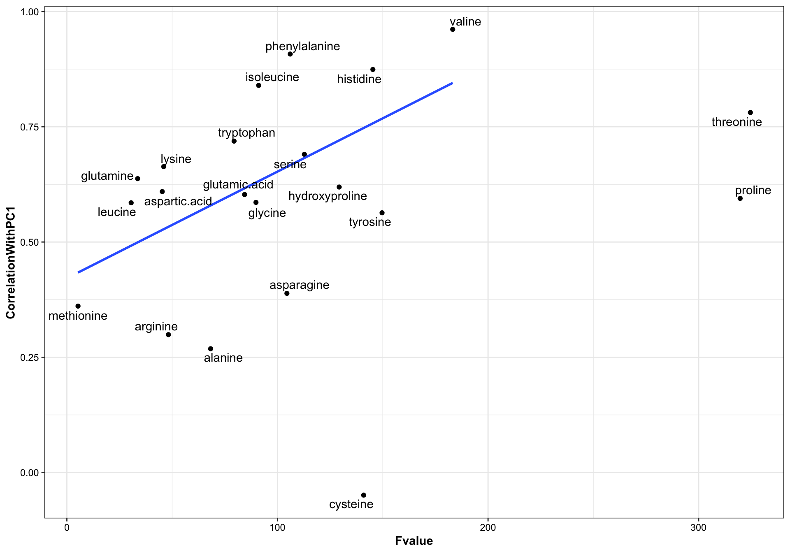
# checking linear model
lm(data = df.ANOVA.PC %>%
filter(!compounds %in%c("cysteine", "proline", "threonine")), # remove some outliers
formula = CorrelationWithPC1 ~ Fvalue) %>% summary()##
## Call:
## lm(formula = CorrelationWithPC1 ~ Fvalue, data = df.ANOVA.PC %>%
## filter(!compounds %in% c("cysteine", "proline", "threonine")))
##
## Residuals:
## Min 1Q Median 3Q Max
## -0.31073 -0.09406 0.04564 0.11668 0.24098
##
## Coefficients:
## Estimate Std. Error t value Pr(>|t|)
## (Intercept) 0.4215105 0.0870521 4.842 0.00018 ***
## Fvalue 0.0023113 0.0008912 2.593 0.01960 *
## ---
## Signif. codes: 0 '***' 0.001 '**' 0.01 '*' 0.05 '.' 0.1 ' ' 1
##
## Residual standard error: 0.1732 on 16 degrees of freedom
## Multiple R-squared: 0.2959, Adjusted R-squared: 0.2519
## F-statistic: 6.725 on 1 and 16 DF, p-value: 0.01967 PCA of other factors
7.1 Cultivation sites
plt.PCA.site.1.2 =
df.PC %>% ggplot(aes(x = PC1, y = PC2, color = Site)) +
geom_point(aes(shape = as.factor(Year))) +
stat_ellipse(level = .7) +
facet_wrap(~Category, nrow = 2, scales = "free_y") +
scale_x_continuous(limits = c(-6, 7)) +
# scale_y_continuous(limits = c(-5, 5)) +
theme(legend.position = c(.9, .75)) +
scale_color_manual(values = color.site)
plt.PCA.site.1.2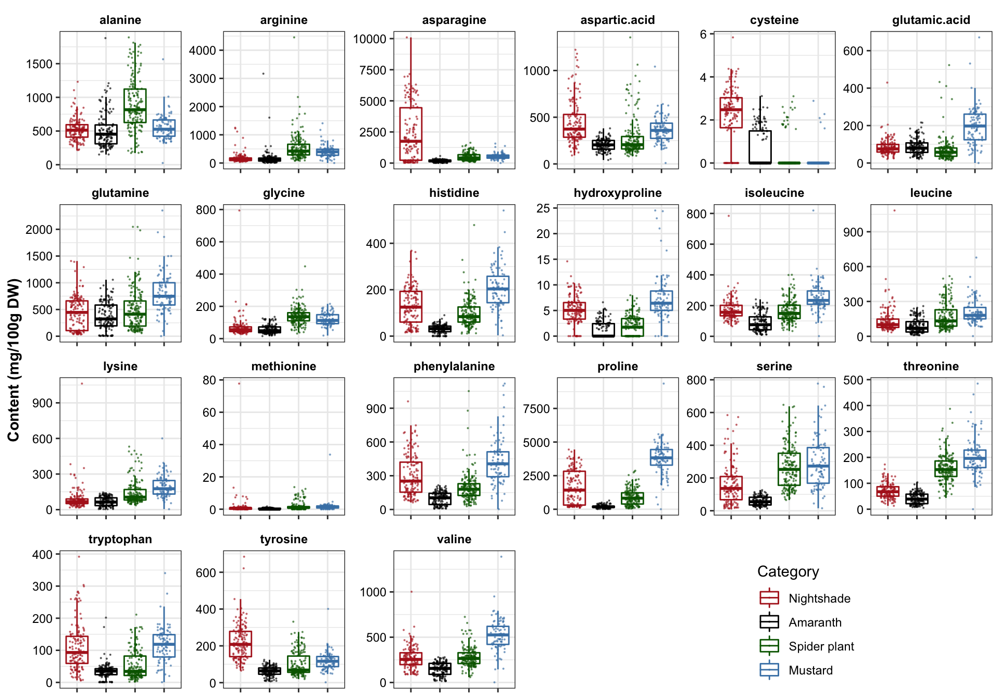
plt.PCA.site.1.3 =
df.PC %>% ggplot(aes(x = PC1, y = PC3, color = Site)) +
geom_point() +
stat_ellipse(level = .7) +
facet_wrap(~Category, nrow = 2) +
scale_x_continuous(limits = c(-6, 7)) +
scale_y_continuous(limits = c(-5, 5)) +
theme(legend.position = c(.9, .85)) +
scale_color_manual(values = color.site)
plt.PCA.site.1.3plt.PCA.site.2.3 =
df.PC %>% ggplot(aes(x = PC2, y = PC3, color = Site)) +
geom_point() +
stat_ellipse(level = .7) +
facet_wrap(~Category, nrow = 2) +
scale_x_continuous(limits = c(-5, 5)) +
scale_y_continuous(limits = c(-4, 3)) +
theme(legend.position = c(.9, .85)) +
scale_color_manual(values = color.site)
plt.PCA.site.2.3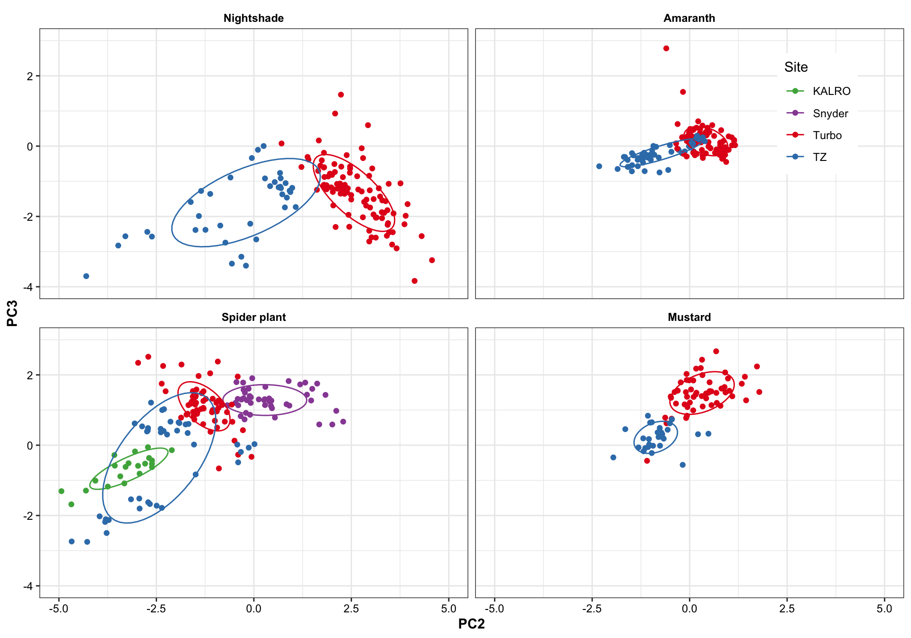
Turbo and Tz showed clear environemntal impact upon amino acid profile. Turbo consistenly showed higher PC2 composition than TZ, showing that plants cultivated in Turbo has more amino acis that have a strong correlation with PC2. PC1, however, appears to be less important than PC2 in distinguishing the cultivation sites. For spiderplant, those cultivated in snyder farm has more content in amino acids with strong correlation with PC2.
Different harvest years is adding more diversity to the profie change, but generally did not alter the grouping based on cultivation sites. That is, the influence is first dominated by cagetory, then cultivation site, then differrent years.
7.1.1 Species (Amaranth)
# Amaranth species
df.PC %>%
filter(Category == "Amaranth") %>%
filter(! Species %in% c("Amaranthus sp.", "-" ) ) %>%
ggplot(aes(x = PC1, y = PC2, color = Species)) +
geom_point(size = 4, aes(shape = Site)) +
#stat_ellipse(level = .7) +
facet_wrap(~Category, nrow = 2)7.2 Cultivars
df.PC %>% ggplot(aes(x = PC1, y = PC2, color = Cultivar)) +
geom_point() +
stat_ellipse(level = .7) +
facet_wrap(~Category, nrow = 2) +
scale_x_continuous(limits = c(-6, 7)) +
scale_y_continuous(limits = c(-5, 5)) +
theme(legend.position = "none")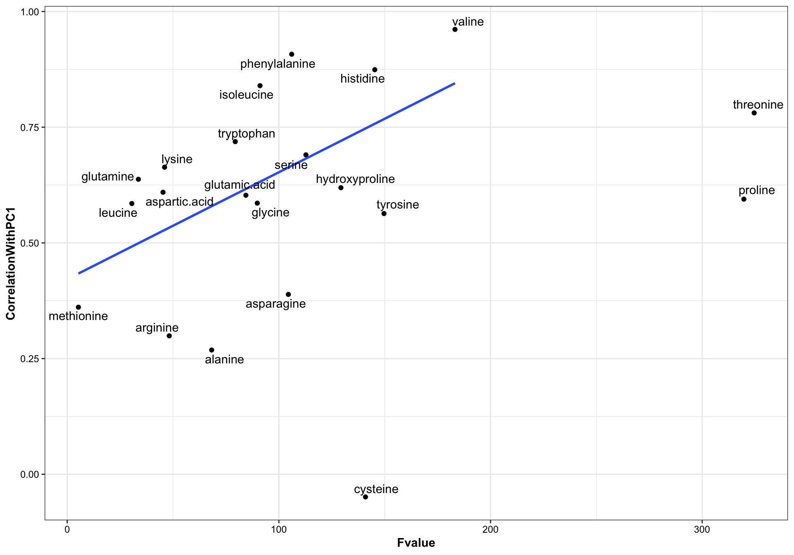
The influence of cultivar appears to be rather inconsistent and overshadowed by various environmental factors, and appears great difficulty in forming their own clusters. Thus, when do machine learning, sample is stratified based on category-cultivation sites, while ignoring plant sub-classification below the level of category.
8 Linear discriminant analysis (LDA)
# tidy up data format
df.content.scaled = mat.content.scaled %>% as_tibble() %>%
mutate(Category = rownames(mat.content.scaled))
# change column order
df.content.scaled= df.content.scaled%>% dplyr::select(ncol(df.content.scaled), 2: ncol(df.content.scaled) - 1)
mdl.LDA = lda(Category ~., data = df.content.scaled)
fitted.LDA = predict(mdl.LDA)
# prediction result
df.LDA = fitted.LDA$x %>% as_tibble() %>%
mutate(fitted = fitted.LDA$class, actual = df.content.scaled$Category,
status = actual == fitted)# plotting
plt.LDA.actual.1.2 = df.LDA %>%
ggplot(aes(x = LD1, y = LD2, color = actual)) +
geom_point() +
scale_color_manual(values = color.category, " ") +
scale_x_continuous(limits = c(-7, 7)) +
scale_y_continuous(limits = c(-6, 6)) +
stat_ellipse(level = .95, linetype = "dashed") +
theme(legend.position = c(.15, .8))
# plt.LDA.actual.1.2plt.LDA.fitted.1.2 = df.LDA %>%
ggplot(aes(x = LD1, y = LD2, color = fitted)) +
geom_point() +
scale_color_manual(values = color.category, " ") +
scale_x_continuous(limits = c(-7, 7)) +
scale_y_continuous(limits = c(-6, 6)) +
stat_ellipse(level = .95, linetype = "dashed") +
theme(legend.position = c(.15, .8)) +
# highlight false points
geom_point(data = df.LDA %>% filter(status == FALSE),
shape = 21, fill = "white",
size = 2.5, stroke = 1.5)
# plt.LDA.fitted.1.2grid.arrange(plt.LDA.actual.1.2 + labs(title = "Actual plot"),
plt.LDA.fitted.1.2 + labs(title = "Predicted plot"),
nrow = 1)In plot on the right, the incorrect predictions are marked as empty circles.
df.LDA %>% dplyr::select(actual, fitted) %>% table()## fitted
## actual Amaranth Mustard Nightshade Spider plant
## Amaranth 143 0 0 0
## Mustard 1 86 0 3
## Nightshade 11 0 128 0
## Spider plant 5 1 0 166cat("LDA's predicted classification accuracy:",
100 - ((! (df.LDA$status ) ) %>% sum() / nrow(df.LDA) * 100) %>% round(1), "%.
(Training set = testing set)")## LDA's predicted classification accuracy: 96.1 %.
## (Training set = testing set)